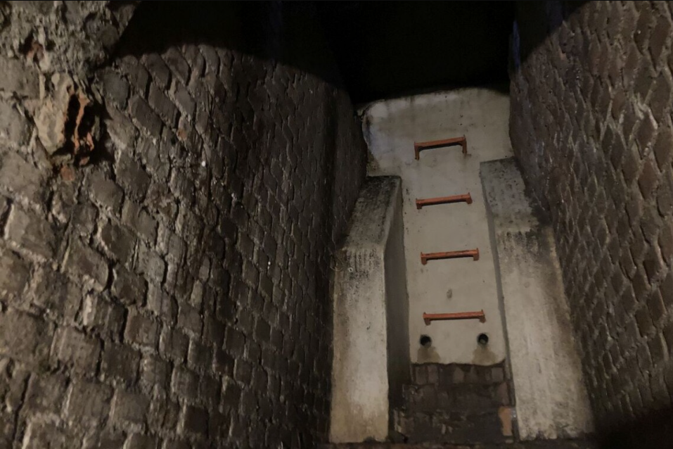
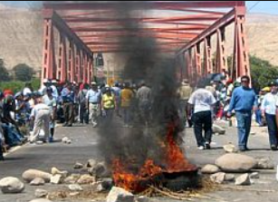
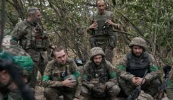

Elegir escapar y proteger a su familia es una decisión muy comprensible y valiente. Lía, al optar por esta ruta, prioriza la seguridad de sus seres queridos, lo que muestra su amor y responsabilidad hacia ellos. Aunque esto significa dejar atrás la lucha por la libertad, puede que sea la mejor opción para asegurar que su familia esté a salvo y que, en el futuro, pueda encontrar una manera de luchar sin poner en riesgo a quienes ama.
Ahora, tienes cuatro opciones para elegir:
Refugio |
Conflicto |
Aliados |
Entrenar |